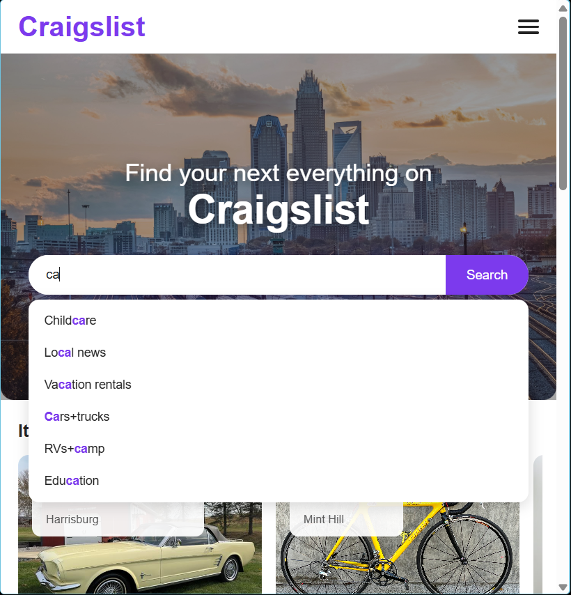
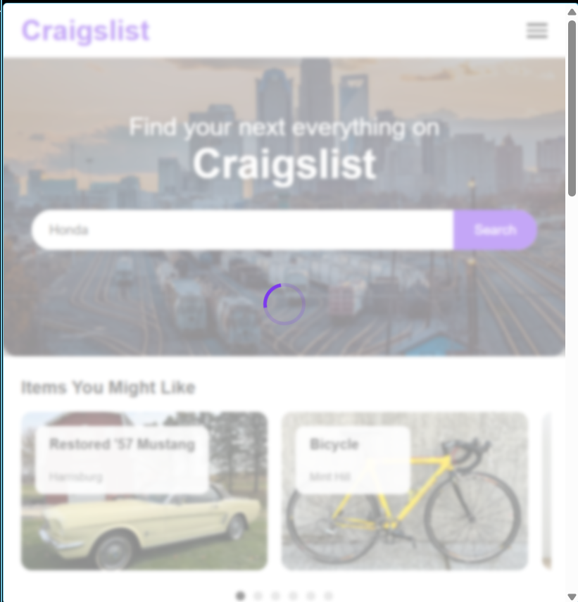

Week 10 – Interactive Search & Micro-Interactions
Overview
In Week 10, we enhanced our interface by adding interactive search, loading states, and micro-interactions. The goal was to make the interface feel responsive and provide immediate feedback to user input.
My Contribution
I contributed to implementing the search interaction experience, including real-time suggestions and loading feedback when users perform a search.
Real-Time Search Suggestions

As users type into the search bar, relevant suggestions appear instantly. This allows users to quickly refine their search without needing to submit the form.
- Suggestions update dynamically as users type
- Dropdown disappears when input is cleared
- Helps users discover categories and refine queries
Loading Feedback

A loading state is displayed when users perform a search. A spinner appears with a short delay to simulate data processing and provide visual feedback.
- 3-second loading buffer after search interaction
- Prevents users from feeling uncertain about system response
- Creates a smoother transition to results
Micro-Interactions
- Smooth dropdown animation for search suggestions
- Loading spinner transition during search actions
- Hover and focus states for search input and buttons
These micro-interactions improve usability by making the interface feel responsive and guiding users through their actions.
Design Impact
These features improve the overall user experience by reducing uncertainty and increasing responsiveness. Users receive immediate feedback, which makes the interface feel faster and more intuitive, even without real backend functionality.